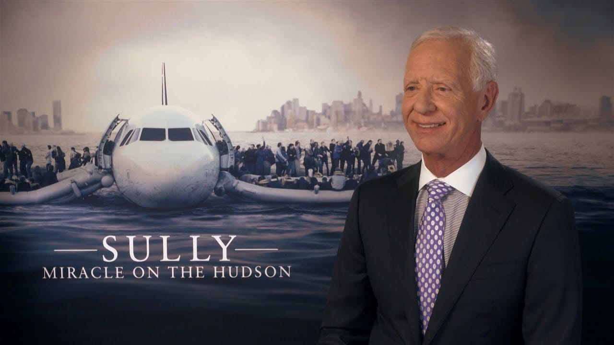

The world needs more pilots like
the captain, Chesley Sullenberger


A lot of ideas to be said about the airline industry, how planes can be better designed and how the cockpit should be designed and operated, and how this industry should act after this difficult pandemic era but I thought that it is better to start by remembering the talented people that traveled safely people and saved them when the aircraft failed to behave normally. they are women and men from the aircraft drafted in Catia to its operations into the airliner that bought it. Like the wright brother, captain Sully is one of those who make us still believe in the ability of aircraft to make us feel capable and powerful as a human being because if you believe in the theory of evolution you could clearly see that pigeons took thousands of year to get the skill for flying while we human being build such beautiful technology like the plane in few years. But I think a big leap forward should be done by this industry that is very constrained by economical factors that make it do only incremental innovations because it would need a lot of logistic and business changes to make a disruptive innovation. trying to build a bigger plane like the A380 taught us that. Aircraft are now more and more complex and automated and pilots have less and less hand on it while computers and actioners have taken the most difficult part but it always helps to have a skilled and maybe a bit lucky captain like the captain sully to land safely a and aircraft with no working engine on a river. if it is about luck I hope it to every pilot but skill has very likely something to do with this successful landing. Then I hope that all pilots will always try with the help of airliners to be at the top of their skills and be always aware and professional when they are in the cockpit as office.
PS: There some key insights that I saw in the data gathered on the airline industry, I will be sharing them here but I am afraid that they will end up being a data-driven book like the ones below
providing early reader access to my coming data-driven book Gametop, anatomy of a stock short bubble. HERE